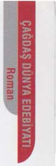
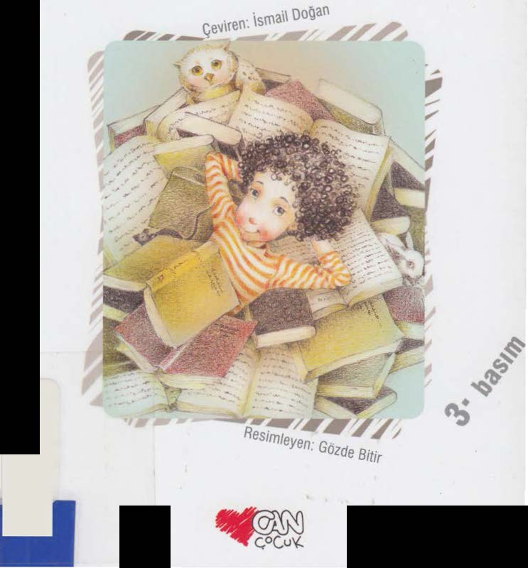

Viktôria Bosnyak
•
PERICADI


Viktôria Bosnyak
.
PERICADI
Peri mi yoksa cadı mı?
Budapeşte'deki ilkokul kütüphanelerinden birinin sorumlusu, çocukların Aranka Mort diye çağırdıkları yaşlı ve huysuz bir teyzedir. Yemek yerken bile okumaya devam eden Lacı dışında hiç kimse okulun en üst katındaki kitaplığa gidip kitap almaz. Laci'nin okuduğu metinlerin üzerinde ancak sihirle açıklanabilecek bir etkisi olur. Aranka Mort'un değişmek için çocukların yardımına ihtiyacı vardır.
KDV İÇİNDEDİR